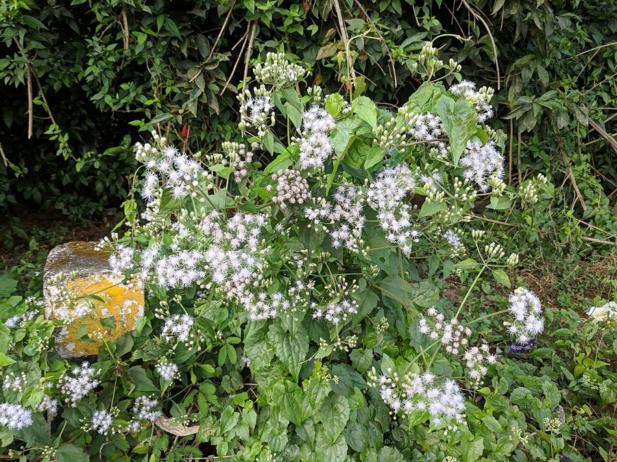

मीलभर खरपतवारMile-a-minute Weed
Mikania micrantha · Asteraceae · FLR-0078

- Scientific name
- Mikania micrantha Kunth
- Family
- Asteraceae
- Hindi
- मीलभर खरपतवार
- Status here
- invasive
- IUCN
- not evaluated
When to look कब देखें
Expected mainly in July, August, September, October, November, December, January.
मीलभर खरपतवार / Mile-a-minute Weed
Mikania micrantha Kunth — Asteraceae
मीलभर खरपतवार (मिकाानिया / बिटरवाइन / चीनी क्रीपर) — पूर्वी उत्तर प्रदेश में धान के खेतों की सीमाओं, सिंचाई नहरों, जंगलों के किनारों और नदियों के बाढ़ वाले इलाकों (moist riverbanks) पर पाया जाने वाला एक अत्यंत हानिकारक, तेजी से बढ़ने वाला और अत्यधिक आक्रामक (highly destructive invasive) खरपतवार है। यह मूल रूप से मध्य और दक्षिण अमेरिका का निवासी है, जिसे दुनिया के 100 सबसे बुरे आक्रामक जीवों (IUCN's 100 worst invasive species list) में शामिल किया गया है। इसकी सबसे बड़ी विशेषता इसकी बढ़ने की असाधारण गति है; अनुकूल परिस्थितियों में यह प्रतिदिन 5 से 8 सेंटीमीटर (grows up to 8 cm per day) तक बढ़ सकता है। यह बेल फसल के पौधों, झाड़ियों और छोटे पेड़ों के ऊपर चढ़कर उन्हें एक घने मखमली जाल के नीचे दबा देती है (smothers vegetation), जिससे उन्हें धूप नहीं मिलती और वे मर जाते हैं। इसके छोटे सफ़ेद फूलों के गुच्छे और दिल के आकार के पत्ते (heart-shaped leaves) होते हैं। यह खरपतवार मिट्टी में अन्य पौधों की वृद्धि को रोकने वाले रसायन छोड़ता है (allelopathy)। बस्ती जिले में स्थानीय किसानों द्वारा इसे उखाड़कर जलाने के अलावा इसकी कोई उपयोगिता नहीं है।
Quick Identification त्वरित पहचान
| Feature | Description |
|---|---|
| Plant habit | Rapidly climbing, twining, herbaceous perennial vine, forming dense tangled mats over surrounding vegetation |
| Growth rate | Extremely rapid vegetative growth, creeping and covering large bushes within weeks (hence the name "mile-a-minute") |
| Leaves | Oppositely arranged, simple, heart-shaped (cordate), with long-pointed tips and wavy, shallowly toothed margins |
| Flowers | Tiny (3–5 mm), white or cream-white, grouped in dense, flat-topped branched clusters (corymbs) |
| Seeds | Tiny, black, four-angled achenes, with a crown of white bristly hairs (pappus) for wind dispersal |
Field tip: Look along canal margins or paddy field fences during late monsoon. Watch for a dense, pale green carpet of vines completely draping and smothering the hedges and small trees. Peel back the vine; you will find heart-shaped leaves growing in opposite pairs and a strong, bitter smell.
Morphology आकारिकी
Biometrics (typical measurements of mature plants in the northern Indian plains):
| Measurement | Range |
|---|---|
| Vine length | 3.0–6.0 m |
| Daily growth rate | 5.0–8.0 cm/day |
| Leaf length | 4.0–13.0 cm |
| Leaf width | 3.0–9.0 cm |
| Flower head size | 3.0–5.0 mm |
| Seed size | 1.5–2.0 mm |
Stem and Branches: Stems are slender, cylindrical, ribbed, and highly branched. They are green when young, becoming slightly woody at the base, rooting easily at the nodes when in contact with moist soil.
Foliage: Simple, opposite leaves, with a deeply notched (heart-shaped) base. The leaves are thin, light green, with prominent veins.
Flowers: Small composite heads (capitula). Each head contains only 4 white, tubular, bisexual flowers, surrounded by four protective green bracts.
Seeds: Small, dry achenes. The feathery white pappus bristles allow the seeds to float on the wind and water surface easily.
Associated Species / Interactions संबंधित प्रजातियाँ
- Smothering Effect: By climbing and forming a dense canopy over host plants, it cuts off sunlight. This limits the photosynthesis of crops and native understory plants, leading to death.
- Soil Alteration: The roots release allelopathic chemicals that damage the soil microbial structure, preventing the regeneration of native tree saplings.
- Pollinators: Despite its invasive nature, the flowers produce sweet nectar that attracts flies, small beetles, and common wasps.
Pests and Diseases कीट और रोग
- Mikania Rust Fungus: The rust fungus Puccinia spegazzinii is a specialized natural parasite. It attacks the stems and leaves of Mikania, creating orange-brown pustules that cause vine collapse. It is studied as a biological control agent.
- Stem Borer Beetle: Larvae bore tunnels inside mature stems, causing them to dry up.
Traditional and Ethnobotanical Use पारंपरिक और नृवंशवनस्पति उपयोग
- Folk Wound Healing (Central America): Although considered a destructive weed in Basti with no positive values, in its native range, the fresh leaves are crushed to extract juice, applied to clean minor cuts and insect bites.
- Exotic Soil Binder: In some tea plantations, it was historically introduced to prevent slope erosion on steep soil banks, which later resulted in severe weed infestations.
- Green Compost Material: Farmers harvest the green vines before flowering, burying them deep inside compost pits to decompose, converting the green mass into organic manure.
- Temporary Cattle Fodder: In times of severe fodder shortage, goats are allowed to graze on the young growing tips of the vine, although it is not a preferred food.
Expected Locally स्थानीय रूप से अपेक्षित
Not a field record. Written from published accounts for eastern Uttar Pradesh. No confirmed local sighting yet — if you have seen it, that is what the atlas needs.
अभी तक स्थानीय पुष्टि नहीं। यह विवरण प्रकाशित स्रोतों से है, किसी अवलोकन से नहीं।
A highly problematic invasive weed recorded in the canal networks and paddy field borders of the Harraiya, Vikramjot, and Basti blocks. Farmers state that this "foreign vine" (pardesi bel) spreads so fast that it blocks irrigation channels, requiring manual clearance twice during the paddy crop cycle. It is also seen smothering native hedges (karonda and babool) along roadside borders.
Distribution वितरण
Global range: Native to tropical Central and South America; now widely naturalized and highly invasive in tropical Asia, East Africa, and the Pacific Islands.
In India: Widespread in Northeast India, Western Ghats, and the Gangetic plains.
In Uttar Pradesh: Spreading rapidly in moist eastern districts with high monsoonal flooding.
In Basti district / eastern UP: Common across all rural and canal-irrigated blocks.
Research Questions शोध प्रश्न
Anyone can investigate these | कोई भी इन प्रश्नों की जाँच कर सकता है
- How many centimeters does a single Mikania vine grow in 24 hours under the high humidity of August in Basti? — Measure and record daily growth rates of 5 marked shoots.
- Does the dense canopy of Mikania reduce the germination rate of wheat seeds sown beneath it? — Conduct seed plot trials.
- What is the survival rate of Mikania stem fragments (with a single node) when thrown on moist soil? — Test vegetative propagation rates.
- How many years have local farmers observed this weed in Basti district? — Conduct oral history interviews with elders.
- Does manual cutting of Mikania vines at the ground level kill the weed, or does it sprout back faster from the root crown? / क्या ज़मीन के स्तर पर मीलभर खरपतवार की बेलों को काटने से वह मर जाती है, या वह जड़ से और तेज़ी से दोबारा अंकुरित होती है? — Monitor regrowth rates after cutting.
Similar Species मिलती-जुलती प्रजातियाँ
| Species | How to tell apart | comparison |
|---|---|---|
| Field Bindweed (Convolvulus arvensis) | Has arrowhead-shaped leaves (not heart-shaped); flowers are large white-pink trumpets | हिरनखुरी — तीर जैसे पत्ते, बड़े कीप जैसे फूल |
| Blue Morning Glory (Ipomoea nil) | Leaves are 3-lobed; flowers are large, bright blue-purple; stems are covered in brown hairs | नीली घुइयाँ — तीन-कटे पत्ते, बड़े नीले-बैंगनी फूल |
| Giant Dodder (Cuscuta reflexa) | Parasitic vine; lacks leaves and green color; stems are thick, yellow-orange; no green leaves | अमरबेल — बिना पत्ती की पीली परजीवी बेल |
Field rule: Highly rapid creeping green vine with opposite, heart-shaped leaves, exuding a bitter smell when crushed, and bearing dense, flat-topped clusters of tiny white flowers, is the Mile-a-minute Weed.
Taxonomy & Classification वर्गीकरण
Original description. Carl Sigismund Kunth described the Mile-a-minute Weed as Mikania micrantha in 1820 in his Nova Genera et Species Plantarum (Vol. 4, p. 134). The type locality was listed as Venezuela. The genus name Mikania honors the Czech botanist Joseph Gottfried Mikan. The specific name micrantha is derived from the Greek mikros (small) and anthos (flower).
Subspecies. Monotypic — no subspecies are currently recognised.
Family and order placement. Placed in the order Asterales, family Asteraceae (sunflower family), subfamily Asteroideae, tribe Eupatorieae.
Phylogenetic notes. Mikania micrantha is a highly specialized vine within the Asteraceae, characterized by its rapid cellular elongation rates and high production of sesquiterpene lactones (allelopathic compounds) that suppress competitive plants.
IUCN status rationale. Not evaluated (NE) by the IUCN Red List. It is an abundant and globally spreading invasive weed, listed as one of the world's worst invaders.
Photo Gallery फोटो गैलरी
References संदर्भ
- Kunth, C. S. (1820). Nova Genera et Species Plantarum. Lutetiae Parisiorum, Vol. 4, p. 134. [original description]
- Holm, L. G., Plucknett, D. L., Pancho, J. V. & Herberger, J. P. (1977). The World's Worst Weeds: Distribution and Biology. University Press of Hawaii.
- Zhang, L. Y., Ye, W. H., Cao, H. L. & Feng, H. L. (2004). Mikania micrantha H.B.K. in China: An overview. Weed Research (includes detailed physiology and growth data).
- Lowe, S., Browne, M., Boudjelas, S. & De Poorter, M. (2000). 100 of the World's Worst Invasive Alien Species. IUCN Invasive Species Specialist Group.
- World Flora Online (2024). Mikania micrantha taxon details.
- GBIF Occurrence Data — Mikania micrantha, India (2010–2025).
Source file: species/flora/weeds/mile_a_minute_weed.md